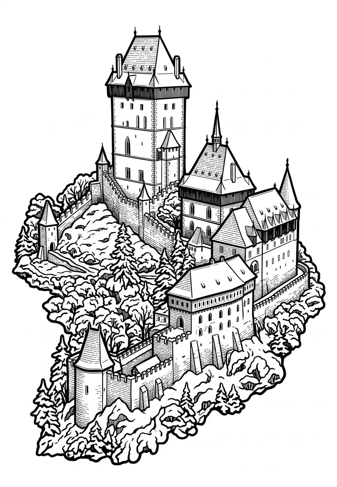

Hrad Karlštejn
Karlštejn (německy Karlstein) je hrad v katastrálním území Budňany v městysi Karlštejn v okrese Beroun, třináct kilometrů východně od Berouna a třicet kilometrů jihozápadně od centra Prahy. Stojí uprostřed chráněné krajinné oblasti Český kras. Hrad je ve vlastnictví České republiky a jeho správu zajišťuje Národní památkový ústav.
Více na Wikipedii